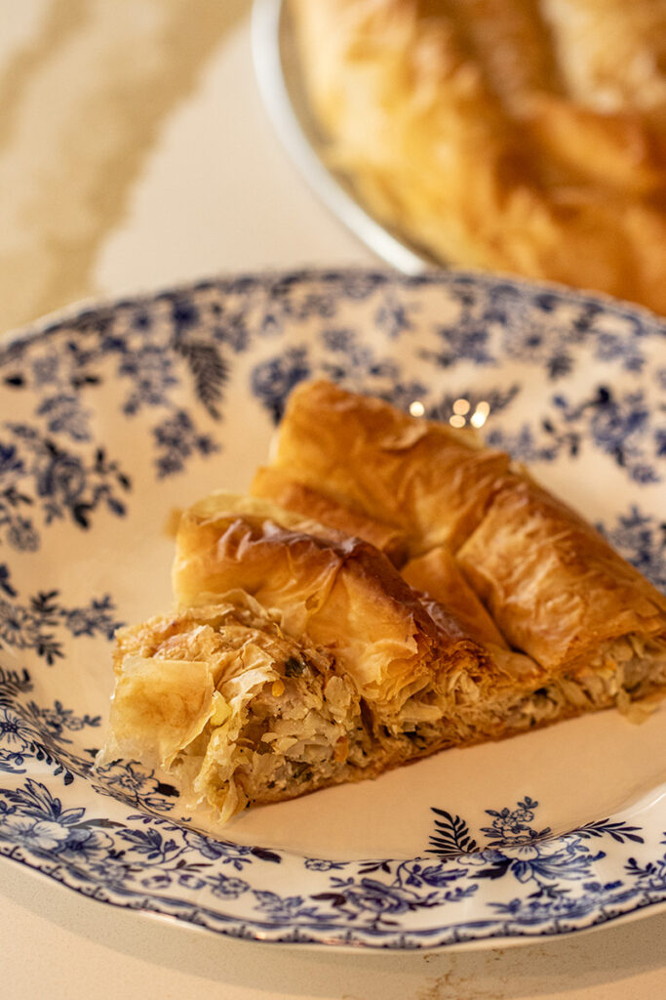

Byrek Me Arme
Home

Albanian Sauerkraut Pie
This sauerkraut pie is not like a traditional american pie, typically filled with sugary fruits. Albanian pie, or Byrek, uses phyllo dough as the base and can be filled with meat and/or vegetables, such as spinach or sauerkraut.
Byrek me arme (sauerkraut pie) is filled with sauerkraut, tomato sauce, rice, and oil. The baked phyllo dough comes out flaky and works perfectly with the internal ingredients creating a delicious meal or snack.
Ingredients
- Phyllo shell we made previously
- 1 can of sauerkraut (16 oz.)
- 1 tablespoon tomato sauce
- 1/4 cup corn oil
- 1/4 cup water
- 2 tablespoons of rice
- paprika for color
Steps
- Strain and rinse sauerkraut in a colander
- Place sauerkraut in sauce pan with the oil and cook until tender
- Add the tomato sauce and cook a little bit more
- Add water and rice. Let simmer on low heat for 10 mins
- Add paprika and let cool
- Pour filling into phyllo shell and sprinkle top with water
- Refer to phyllo shell for baking instructions
- Enjoy!